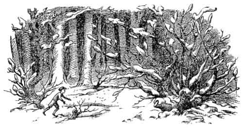
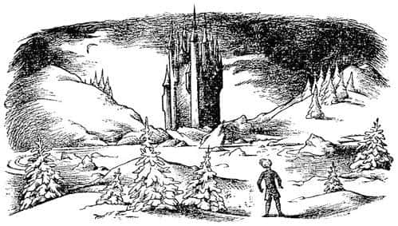
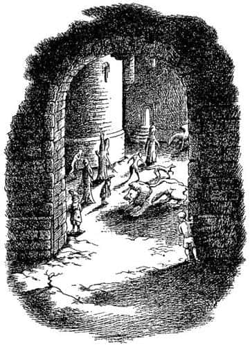
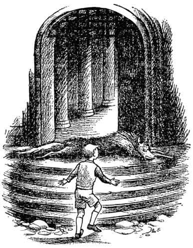

Cadı’nın Evinde
Şimdi kuşkusuz Edmund’a ne olduğunu öğrenmek istiyorsunuz. Yemekten kendi payına düşeni yemişti fakat bundan pek hoşlanmamıştı. Çünkü aklında hep Türk lokumu vardı – ve iyi, sıradan bir yemeğin tadını, kötü ve büyülü bir yiyeceğin hatırlanması kadar bozan bir şey yoktur. Konuşmalardan da pek hoşlanmamıştı, çünkü diğerlerinin kendisine aldırmadığını ve soğuk davrandıklarını düşünüyordu. Böyle değildi, ama o böyle sanıyordu. Sonra Bay Kunduz’un Aslan hakkında anlattığı her şeyi ve Aslan’la Taş Masa’da buluşma planlarını dinlemişti. Bundan sonra sessizce kapının önünde asılı olan perdenin arkasına doğru kaymaya başlamıştı. Çünkü Aslan’dan söz edilmesi diğerlerine esrarengiz ve hoş bir duygu verdiği halde ona yine esrarengiz ama korkunç bir duygu vermekteydi.
Bay Kunduz Âdem’in eti ve Âdem’in kemikleri üstüne yazılmış şiiri okurken Edmund sessizce kapının kolunu çevirmekteydi. Bay Kunduz, Beyaz Cadı’nın gerçekte asla bir insan olmadığını, ama yarı cin yarı dev olduğunu anlatmaya başlamadan az önce Edmund dışarıya, karlı havaya çıkmış ve kapıyı arkadan dikkatle kapatmıştı.
Şu anda bile, Edmund’un kötü biri olduğunu; gerçekten kız ve erkek kardeşlerinin taşa çevrilmesini istediğini düşünmemelisiniz. Canı Türk lokumu istiyor ve bir prens (sonra da kral) olup kendisine canavar diyen Peter’e ders vermek istiyordu. Cadı’nın diğerlerine ne yapacağına gelince; onun kardeşlerine daha iyi davranmasını ve onları kendisiyle aynı düzeye koymasını kesinlikle istemiyordu. Çünkü Cadı’nın onlara kötü bir şey yapmayacağına da inanıyor ya da inandığını sanıyordu. “Çünkü” diyordu kendi kendine, “onun hakkında kötü şeyler söyleyen tüm bu insanlar onun düşmanları ve muhtemelen söylenenlerin yarısı bile doğru değil. O bana çok iyi davrandı; en azından bunlardan çok daha iyi davrandı. Umarım kraliçelik gerçekten onun hakkıdır. Hiç olmazsa, o dehşet verici Aslan’dan daha iyidir!” Yaptığı şey için kendi kendine bulduğu bahane buydu ancak çok da iyi bir bahane değildi, çünkü aslında, içten içe Beyaz Cadı’nın kötü ve zalim olduğunu düşünüyordu.
Dışarıya çıkıp da kar yağdığını görünce aklına ilk gelen şey paltosunu kunduzun evinde bıraktığı oldu. Kuşkusuz onu almak için geri dönme şansı yoktu artık. Sonra havanın kararmakta olduğunu gördü. Zaten akşam yemeğine oturduklarında saat neredeyse üçtü ve kış günleri kısaydı. Bu hesapta olmayan bir şeydi, ama katlanmak zorundaydı. Böylece yakalarını yukarı kaldırdı ve nehrin uzak yakasına doğru bendin üzerinde yürümeye başladı. Neyse ki yol, yeni yağan kar nedeniyle çok kaygan değildi.
Öbür yakaya ulaştığında durum oldukça kötüleşti. Geçen her dakika ortalığın daha da karardığı yetmiyormuş gibi, tipiye çeviren hava nedeniyle bir metre ilerisini bile zorlukla görüyordu. Görünürde bir yol da yoktu. Çukurlara dolmuş karlara batarak, donmuş su birikintilerinde kayarak, devrilmiş ağaçlara takılarak, dik yamaçlardan aşağı kayarak, bacaklarını kayalara çarparak, her yanı morluklar içinde ıslak ve titreyerek yola devam etti. En kötüsü de sessizlik ve yalnızlıktı. Aslında düşünüyorum da, kendi kendine, “Narnia kralı olduğumda ilk yapacağım şey iyi yollar inşa etmek olacak” demiş olmasaydı, bütün plandan vazgeçip geri dönebilir ve her şeyi anlatıp diğerleriyle dost olabilirdi. Kuşkusuz bu, onun kral olduktan sonra yapacağı diğer şeyler üstüne düşünmesine yol açtı ve neşesi yerine geldi. Ne tür bir sarayda yaşayacağına, kaç arabası olacağına ve özel sinemasının özelliklerine, ana demiryollarının nerede olacağına, kunduzlara ve barajlara karşı ne gibi kanunlar yapacağına ve Peter’e nasıl haddini bildireceğine tam karar vermişti ki hava değişti. Önce kar kesildi. Sonra bir rüzgâr çıktı ve hava buz gibi oldu. En sonunda da bulutlar uzaklaştı ve ay ortaya çıktı. Karların üzerinde pırıl pırıl pırıldayan bir dolunaydı ve her yeri gündüz gibi aydınlattı – sadece gölgeler oldukça şaşırtıcıydı.

Diğer nehre ulaştığında – kunduzların evine gelirken küçük bir nehrin aşağıda daha büyük bir nehre karıştığını gördüğünü hatırlarsınız – eğer ay çıkmış olmasaydı yolunu asla bulamazdı. Şimdi o nehre ulaşmıştı. Kıyıyı izleyerek yürümeye başladı. Ancak nehrin aktığı küçük vadi, Edmund’un geldiği vadiden çok daha dik ve kayalıktı. Öylesine çalılıklarla kaplıydı ki, ay olmasaydı karanlıkta yürümek mümkün olmazdı. Şimdi bile iliklerine kadar ıslanmıştı, çünkü dalların altından eğilerek geçmek zorundaydı ve bir sürü kar kayarak sırtına düşüyordu. Her defasında, sanki tüm bunlar onun suçuymuş gibi, Peter’den ne kadar nefret ettiğini daha fazla düşünmeye başlamıştı.
Sonunda vadiden açık bir alana çıktı, düzlük bir yere geldi. Orada, nehrin diğer yakasında, kendisine oldukça yakın, iki tepenin arasındaki küçük bir ovada Beyaz Cadı’nın evi olması gereken yapıyı gördü. Ay eskisine oranla çok daha parlaktı. Küçük bir kaleyi andıran evin bir sürü kulesi vardı; uçları iğne gibi sipsivri küçük kuleler. Kocaman kâğıt külahlara ya da büyücü külahlarına benziyorlardı. Ay ışığında parıldıyorlardı ve gölgeleri kar üzerinde tuhaf görünüyordu. Edmund evden korkmaya başlamıştı.

Artık geriye dönmeyi düşünmek için çok geçti. Donmuş nehrin üzerinden geçti ve eve yaklaştı. Hiçbir kıpırtı yoktu. En küçük bir ses bile duyulmuyordu. Yeni yağmış karda kendi ayak sesini de işitmiyordu. Kapıyı bulabilmek için bir köşeden diğer köşeye ilerledi, bir kuleden diğer kuleye geçti; yürüdü, yürüdü. Kapıyı görmek için binanın tam öbür yakasına dolanması gerekti. Dev gibi kemerli bir kapıydı. Ama kanatları ardına kadar açıktı.
Edmund yavaşça kemere doğru yürüdü, içeriye, bahçeye baktı ve orada neredeyse kalbini durduracak bir şey gördü. Kapının hemen ötesinde, üzerinde ay ışığı parlayan ve sanki atlamaya hazırmış gibi duran kocaman bir aslan vardı. Edmund dizleri titreyerek ve ileri ya da geri gitmeye korkarak kemerin gölgesinde dikildi kaldı. Orada öylesine uzun süre dikildi ki dişleri, eğer korkudan değilse bile soğuktan tıkırdıyordu. Bunun ne kadar sürdüğünü bilmiyorum ama Edmund’a saatlerce sürmüş gibi geldi.

Sonunda aslanın neden böyle hiç kıpırdamadan durduğunu merak etmeye başladı – çünkü onu ilk gördüğünden beri bir santim bile kımıldamamıştı. Becerebildiği kadar kemerin gölgesinde kalmaya çalışarak biraz daha yaklaşmaya cesaret edebildi. Aslanın, kendisine bakmadığını fark etti. “Ya başını çevirirse?” diye düşündü Edmund. Aslında aslan başka bir şeye; bir buçuk metre ötede ona sırtını dönmüş olarak ayakta duran bir cüceye bakmaktaydı. “Hah!” diye düşündü Edmund. “Cüceye doğru sıçradığında benim kaçma şansım olacak.” Ancak, ne aslan ne de cüce kıpırdıyordu. Sonunda Edmund, diğerlerinin, Beyaz Cadı’nın insanları taşa döndürmesi hakkındaki konuşmalarını hatırladı. Belki de bu yalnızca aslan heykeliydi. Bu düşünce aklından geçtiği an aslanın sırtının ve kafasının karla kaplı olduğunu fark etti. Öyle ya! Bu sadece bir heykel olmalıydı! Hiçbir canlı hayvan üstünün karlarla örtülmesine izin vermezdi. Biraz sonra yavaşça ve kalbi küt küt atarak aslana yaklaşmaya cesaret edebildi. Şimdi bile ona dokunmaktan çekiniyordu. Fakat sonunda elini hızla uzattı ve dokundu. Soğuk, taş bir aslandı bu. Bunca zaman sadece bir heykelden korkmuştu.
Edmund öylesine büyük bir ferahlık hissetmişti ki soğuğa karşın ta ayak parmaklarına kadar ısınmıştı. O sırada aklına mükemmel gibi görünen bir fikir gelmişti. “Muhtemelen” diye düşündü, “söz ettikleri büyük Aslan bu. Cadı onu yakalayıp şimdiden taşa döndürmüş. Onun hakkında düşündükleri tüm iyi şeylerin sonu bu. Pöh! Aslan’dan kim korkar?”
Orada durup taş aslanı zevkle seyretti. Sonra da çok çocukça ve gülünç bir şey yaptı. Cebinden bir kurşunkalem çıkarıp aslanın üst dudağına bir bıyık ve gözlerine bir gözlük çiziktirdi. Sonra dedi ki, “Ya! Komik, yaşlı Aslan. Taş olmaktan hoşlanıyor musun? Kendini çok güçlü sanmıştın değil mi?” Fakat yüzündeki çizgilere karşın ay ışığına bakan aslan öyle korkunç, üzgün ve soylu görünüyordu ki, Edmund aslında onunla alay etmekten zevk almamıştı. Başını çevirip avluda yürümeye başladı.
Avlunun ortasına geldiğinde her yerde, yarım kalmış bir oyundaki satranç taşları gibi, orada burada duran onlarca heykel olduğunu gördü. Taştan satirler, kurtlar, ayılar, tilkiler ve vaşaklar. Kadına benzeyen ama aslında ağaçların ruhları olan taştan harika şekiller vardı. Bir sentor’un* harika bir kopyası, kanatlı bir at ve Edmund’un bir ejderhaya benzettiği yılan gibi bir yaratık vardı. Tümü de, parlak ve soğuk ay ışığı altında birer canlıymış gibi, ama aynı zamanda kıpırtısız bir şekilde durdukları için öylesine tuhaf görünüyorlardı ki avluda yürümek ürkütücüydü. Tam ortada insana benzeyen, bir ağaç büyüklüğünde, sert yüzlü, kaba sakallı ve sağ elinde sopa olan bir figür vardı. Onun canlı değil, taştan bir dev olduğunu bilmesine karşın Edmund yanından geçmek istememişti.
Şimdi avlunun öbür yakasındaki bir kapıdan süzülen zayıf ışığı görüyordu. Oraya doğru yürüdü. Açık bir kapıya doğru yükselen taş merdivenleri gördü. Edmund merdivenleri tırmandı. Eşikte kocaman bir kurt yatmaktaydı.

Kendi kendine “Her şey yolunda, her şey yolunda” deyip duruyordu, “yalnızca taş bir kurt. Bana zarar veremez” ve üzerinden atlamak için ayağını kaldırdı. İri yaratık aniden, sırtındaki tüyler dikilmiş şekilde ayağa kalktı, büyük kırmızı ağzını açtı ve hırlayan bir sesle:
“Kim var orada? Kim var orada?” dedi, “Yabancı, hiç kıpırdama ve bana kim olduğunu söyle.”
“Lütfen efendim” dedi Edmund. Öylesine titriyordu ki zorlukla konuşabiliyordu. “Benim adım Edmund, Majesteleri’nin önceki gün ormanda karşılaştığı Âdemoğlu benim. Ona, erkek ve kız kardeşlerimin Narnia’da olduğu haberini getirmeye geldim, oldukça yakındalar, Kunduz’un evinde. O – O onları görmek istemişti.”
“Majesteleri’ne bildireceğim” dedi Kurt. “Bu arada, canına değer veriyorsan eşikte dur ve bir yere kıpırdama.” Sonra evin içinde kayboldu.
Edmund kalbi küt küt atarak ve soğuktan parmakları ağrıyarak durdu ve bekledi. Kısa bir süre sonra kurt, Cadı’nın Gizli Polis Şefi Maugrim, sekerek geri geldi ve “İçeri gel, içeri gel!” dedi, “Kraliçe’nin şanslı – belki de pek de şanslı olmayan – gözdesi.”
Edmund, kurdun pençelerine basmamaya dikkat ederek içeriye girdi.
Kendini birçok sütunun bulunduğu, avludaki gibi heykellerle dolu, uzun ve kasvetli bir koridorda buldu. Kapıya en yakın heykel, yüzünde çok kederli bir ifade olan küçük bir Faun’du. Edmund, bunun Lucy’nin dostu olup olmadığını merak etmekten kendini alamadı. Tek ışık kaynağı bir lambaydı ve hemen yanında Beyaz Cadı oturmaktaydı.
“Size geldim Majesteleri” dedi Edmund sabırsızlıkla ileri atılarak.
“Yalnız gelmeye nasıl cüret ediyorsun?” dedi Cadı korkunç bir sesle. “Diğerlerini de beraberinde getirmeni söylemedim mi?”
“Lütfen Majesteleri” dedi Edmund, “elimden geleni yaptım. Onları epeyce yakına getirdim. Nehrin yukarısında, bendin üzerindeki küçük evdeler – Bay ve Bayan Kunduz’la beraberler.”
Cadı’nın yüzünü yavaş yavaş zalim bir ifade kapladı.
“Haberin hepsi bu mu?” diye sordu.
“Hayır, Majesteleri” dedi Edmund ve Kunduz’un evini terk etmeden önce duyduğu her şeyi ona anlattı.
“Ne? Aslan mı?” diye bağırdı Kraliçe, “Aslan! Bu doğru mu? Bana yalan söylediğini öğrenirsem—”
“Lütfen, yalnızca onların söylediklerini tekrarlıyorum” diye kekeledi Edmund.
Fakat artık ona dikkat bile etmeyen Kraliçe ellerini çırptı. Bir anda, Edmund’un daha önce onunla birlikte gördüğü cüce ortaya çıktı.
“Kızağı hazırla” diye emretti Cadı, “ve zilsiz koşum takımlarını kullan.”
* İnsan başlı at biçimindeki mitolojik yaratık.